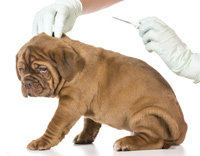

 <div class="row">
          <div class="col-xs-6 col-sm-3 col-md-3">
            <div class="team-wrapper-big wow bounceInUp" data-wow-delay="0.2s">
              <div class="team-wrapper-overlay">
                <h5>VACUNACION</h5>
                <p>La vacunación es un acto clínico de gran importancia para la salud de las mascotas; solo un veterinario puede valorar su estado sanitario, la edad idónea, una correcta desparasitación y otras circunstancias necesarias para obtener una buena inmunidad.

                  El momento de la vacunación es importante pues los anticuerpos maternos que la madre ha transmitido tanto a través de la placenta como fundamentalmente con el calostro, que es la primera leche enriquecida con anticuerpos, van disminuyendo después del nacimiento, pero si se hace prematuramente la inmunidad maternal puede interferir con la vacuna y, si vacunamos demasiado tarde, el animal estará un cierto tiempo sin protección. Debemos consultar con nuestro veterinario que nos indicará la pauta correcta.</p>
                
              </div>
              
            </div>
          </div>
